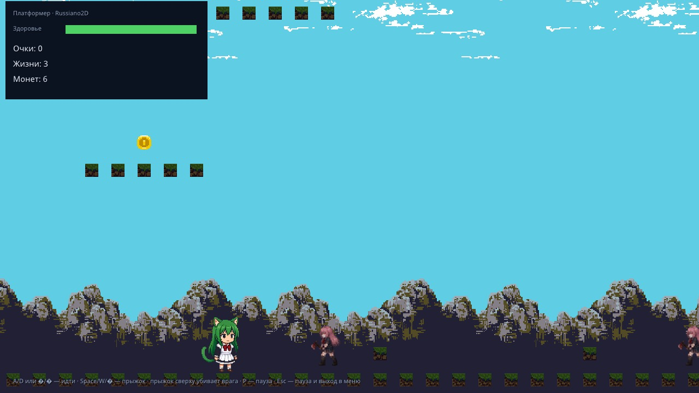
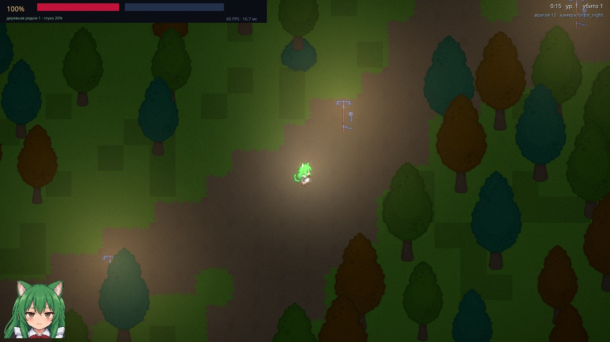
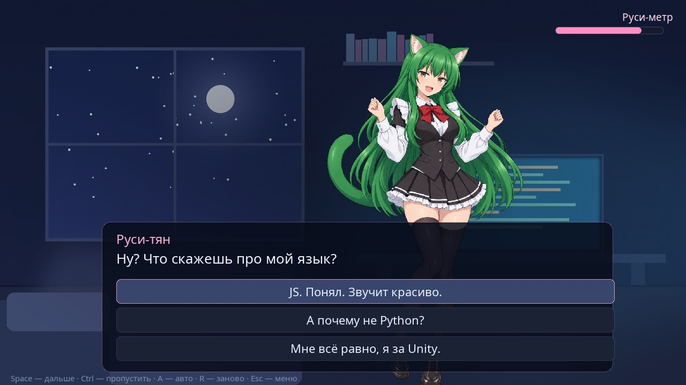

$ Высокоуровневое API $
Декларативные цепочки вместо десятка параметров: создание, поиск по CSS-подобным
селекторам (#id, .class, :alive, [hp<20]),
твины, физика, события, звук, UI.
Настоящий российский 2D-движок · C11 + QuickJS-ng
Ядро на C, игровая логика на JavaScript
через $. Игра — обычный код и данные, которые удобно читать и менять.
SDK помогает создавать спрайты, анимации, частицы и интерфейсы RmlUi;
Re2D Baker превращает VRM/GLB в Re2DSprite.
Пакеты для macOS, Linux и Windows включают движок, SDK и документацию.
Замер 08.10.2026 · v0.1.23 · Mac mini M4 · 16 ГБ · Metal · Release · 1280×720. Условия и полная таблица
Движок готов к дистрибуции: собирает игру в один исполняемый файл и умеет работать инструментом для программы, а не только для человека.
$Декларативные цепочки вместо десятка параметров: создание, поиск по CSS-подобным
селекторам (#id, .class, :alive, [hp<20]),
твины, физика, события, звук, UI.
Правка любого .js в game/ перезапускает QuickJS, не пересоздавая
окно и физический мир — цикл правок занимает секунды.
Скрипты компилируются в байткод QuickJS и вместе с ассетами приписываются к копии движка. Контейнер шифруется ChaCha20-Poly1305, подмена байта ломает запуск.
--agent --headless: JSON-команды в stdin, ответы в stdout,
детерминированные кадры (--fixed-dt, --seed), eval,
state, screenshot и виртуальный ввод.
Выборка по радиусу одним нативным проходом:
$('.goblin').within('#hero', 250).remove(). Те же селекторы
видят агент (query, inspect), DevTools и сама игра.
--record пишет ввод, --replay проигрывает его на фиксированном шаге
с тем же зерном: баг, пойманный один раз, воспроизводится всегда.
Утверждения на селекторах, а не на внутренностях:
$.expect('#door').state('open'), .count(5),
.positionNear(100, 300). Итог видит и человек, и агент.
Box2D v3: формы тел, односторонние платформы, суставы, лучи и запросы. Своё 2D BSP-дерево упорядочивает геометрию без z-буфера.
Полигоны видимости поверх trylock/visibility: тени от стволов,
фонари, глушение звука в чаще — как в демо «Типичная ночь в Мытищинском лесу».
Игровой код наполняет плоский Float32Array и отдаёт кадр одним вызовом
в C. Батчинг, blend-режимы, канвас-слои и параллакс, SPIR-V → MSL на этапе сборки.
HTML/CSS-подобная разметка: панели, списки, скроллы, слайдеры, чекбоксы, диалоги, якоря и темы. Виртуальная новелла целиком собрана на ней.
Анимация и машины состояний, TileMap с автотайлом и Y-sort, частицы, VFX, навигация A* и navmesh, prefab'ы, аудио-шины, локализация, пул узлов, HTTP, триггеры.
Весь игровой код — один глобальный объект $, без импортов. Игра выглядит как обычный текст.
$.ready(() => {
$.world.gravity(0, 1200).color('#101820').bounds(0, 0, 4000, 1200);
$('<player>', { id: 'hero' })
.at(100, 300).size(32, 48).health(100).speed(250)
.controls('wasd')
.on('hit', e => $.camera.shake(4, 200))
.on('death', () => $.scene.load('gameOver'))
.appendTo($.world);
for (let i = 0; i < 5; i++) {
$('<enemy>', { class: 'goblin' })
.at(500 + i * 80, 300).health(30).speed(80)
.on('death', e => { $.sound.playAt('die.ogg', e.self); e.self.fadeOut(200).remove(); })
.appendTo($.world);
}
$.camera.follow('#hero').zoom(1.5);
});
$.update(dt => {
$('.goblin').each(e => {
if (e.distanceTo('#hero') < 250) e.moveTowards('#hero', 120);
});
});# Зависимости тянутся сами через CMake FetchContent
cmake -S . -B build -DCMAKE_BUILD_TYPE=Debug
cmake --build build -j
./build/russiano2d # игра из каталога game/
./build/russiano2d --game demos # меню со всеми демо
./build/russiano2d --game sdk # инструменты разработки
# Игра: скрипты + ассеты внутри, соседний lib/ распространяется вместе
./build/russiano2d build --project . --entry game/main.js --out mygame
./mygame./build/russiano2d --agent --headless --fixed-dt 0.0166666667 --game demos --scene platformer
→ {"cmd":"ping","id":1}
← {"ok":true,"id":1,"pong":true,"frame":1,"time":0.016}
→ {"cmd":"keys","hold":["D"]}
→ {"cmd":"step","frames":60}
→ {"cmd":"eval","code":"$('#hero').pos()"}
← {"ok":true,"result":{"x":296.5,"y":300}}
→ {"cmd":"screenshot","path":"build/level1.png"}
Кадры сами не идут — их продвигает команда step, поэтому прогон воспроизводим
побитово. Готовый клиент — tools/agent_client.py, протокол —
AGENT_API.
Все запускаются одним и тем же бинарником: ./build/russiano2d --game demos

Box2D, листы анимации, монеты, враги, параллакс, HUD и пауза.
Разбор →
Ночной лес: авто-стрельба, волны, опыт и карты апгрейдов; свет только от фонарей, тени от стволов, кровь и лужи. В духе Vampire Survivors.
Разбор →
Визуальная новелла на $.timeline: интерфейс целиком на RmlUi,
семь поз героини, озвучка реплик, три выбора и две концовки.
Меню демо запускается прямо на странице: движок собран под WebGPU (Emscripten + SDL_GPU), интерфейс — на RmlUi. Нужен браузер с WebGPU (Chrome, Edge, Safari 26+, Firefox 141+) и около 70 МБ трафика — груз тянется один раз и кешируется.
| A D / ← → | идти |
| Space / W / ↑ | прыжок, стрельба |
| Ctrl · A · R | пропустить · авто-режим · заново (новелла) |
| Esc | выход из демо в меню |
| F1 / F5 | отладочный оверлей / перезапуск скриптов |
C-ядро владеет всем: окном, GPU-устройством, физическим миром и жизненным циклом JavaScript. Скрипт не может уронить движок — ошибка уходит в консоль и оверлей, а кадр продолжает рисоваться.
окно, ввод, GPU-устройство, физический мир, тайминги
+ Box2D v3globalThis.engine ↓игровая логика и API $ (встроены в бинарник)
один кадр — один вызов отрисовки
Vulkan · Metal · DX12Вызов через границу C ↔ JS дорог, поэтому отрисовка не идёт по спрайту. Код наполняет
плоский Float32Array и отдаёт его одним вызовом engine.submitSprites().
В стенде: 1 draw call на 1000 спрайтов с одной текстурой, без смены blend/clip. Число зависит от сцены.
JS не считает коллизии и не трогает векторы Box2D: создаёт тело и получает числовой id.
engine.getTransforms() возвращает Float32Array, который смотрит
прямо в память C — без копирования.
Игровой код и рендер работают в пикселях, логические координаты окна не зависят от DPI
(на Retina 1280×720 остаётся 1280×720). 32 пикселя = 1 метр, ось y вниз как на экране.
На этапе сборки GLSL компилируется в SPIR-V, оттуда в Metal Shading Language, и оба варианта встраиваются в бинарник. На старте движок спрашивает устройство и берёт подходящий.
Шифрование контейнера — это обфускация, а не защита: ключ обязан лежать в файле. Что реально сделано: байткод вместо исходников, уникальный ключ на сборку, расшифрованное стирается при выходе.
SDL3 3.4SDL_GPUQuickJS-ng 0.10Box2D v3.1 SDL3_mixer 3.2RmlUi 6.3libcurl 2D BSP (своё)visibilityMDI-иконкиC11 + C++20 адаптеры
Сборки лежат и здесь, и в самом репозитории. Внутри каждого пакета — движок, SDK с инструментами и шаблонами, игра по умолчанию, ассеты, инструкция «первый проект» и AGENTS.md со всей документацией движка внутри одного файла.
Apple Silicon
Скачать .tar.gz39 МБ
Intel x86_64
Скачать .tar.gz32 МБ
x86_64
Скачать .tar.gz37 МБ
aarch64
Скачать .tar.gz21 МБ
x86_64
Скачать .zip22 МБ
Проверить целостность: shasum -a 256 -c SHA256SUMS.txt
(контрольные суммы).
Все пять платформ и контрольные суммы также доступны в
GitHub Releases.
Нужны CMake 3.24+, компилятор с C11 и C++20 (AppleClang, GCC, Clang, MSVC) и Git. Первый прогон — несколько минут: собираются SDL3, SDL3_image, QuickJS-ng, Box2D, RmlUi, glslang и SPIRV-Cross. Дальше сборка инкрементальная.
git clone https://github.com/Nikide/russiano2d.git && cd russiano2d
cmake -S . -B build -DCMAKE_BUILD_TYPE=Debug
cmake --build build -j
./build/russiano2d --game demosОдна команда собирает все платформы, которые можно собрать на этой машине:
python3 tools/autobuild.py --with-windows — Linux и Windows собираются в контейнере,
macOS нативно, на выходе архивы и общий SHA256SUMS.txt.
Вопросы, которые всё равно зададут. Поэтому отвечаем сразу.
Нет. Он и не нужен.
А мы всё равно его сделали. Мы ж не ебанутые.
Нет.
И не нужен.
Есть $('<player>').
Не усложняй.
$ — точка входа? Движок же русский.Потому что это JavaScript, блядь.
И $ — далеко не самая странная вещь в этом движке.
Не нравится — объяви точкой входа хоть слово ХУЙ.
JavaScript это полностью позволяет. Особенно тот, который встроен
в этот движок.
const ХУЙ = $;
ХУЙ('<player>', { id: 'hero' })
.at(100, 300)
.appendTo(ХУЙ.world);Всё. Теперь точка входа российская.
Потому что, блядь, пока питонщики спорят — пробелы или табы, а потом обмазываются YAML-файлами, нормальные люди уже закрыли фигурную скобку и пошли делать игру.
$('<player>')
.at(100, 300)
.controls('wasd');}
Всё. Архитектура закончилась. Игра началась.
А в Unreal, чтобы бедным детям не смотреть на страшные буковки, принесли Blueprints — и никто не жалуется.
И вообще тут можно написать целую игру в одну строчку. Буквально.
$('<player>').at(100,100).sprite('hero.png').body('dynamic').controls('wasd').on('death',()=>$.scene.reload()).appendTo($.world);Не можешь прочитать?
Отлично.
В Unreal она была бы нарисована проводами.
Да, 1Сник.
Поэтому Russiano2D поддерживает русское написание API.
$.мир.gravity(0, 0).bounds(0, 0, 800, 600);
$('<свет>', {
'радиус': 280,
'цвет': '#ffd9a0',
'тени': true
})
.в(200, 300)
.смешать('add')
.конус(70)
.добавитьВ($.мир);
$('<игрок>', { id: 'герой' })
.в(100, 300)
.скорость(220)
.управление('wasd')
.на('смерть', () => $.сцена.load('конец'))
.добавитьВ($.мир);
$('игрок').цвет('#ffd9a0');Зачем?
Хуй его знает.
Но оно работает.
И что самое страшное — это даже развивается. Иногда.
$?
То идёшь нахуй.
Начиная с одной из древних версий низкоуровневый JS API вообще выкинули.
Поэтому $ теперь одновременно
высокоуровневый и низкоуровневый API.
Пиздануться, да?
Зато больше не надо выбирать.
Да, ебанутый.
И вообще-то тут сцен нет.
Нет.
А персонажа на 360° повернуть?
Да.
FPS?
Да.
Несколько этажей?
Да.
3D-модели и VRM импортировать?
Будет.
Так это 3D?
Нет, блядь.
Это Re2D.
Играюсь, блядь.
Распространяю его сразу через три сервиса, веду Git, пополняю документацию, выпускаю релизы и почти каждый день занимаюсь оптимизацией.
Очень несерьёзно играюсь.
Но есть реальная проблема: движок пока активно развивается.
Если ты начал игру на 1.X.1, никто не гарантирует,
что она без изменений заведётся на 1.X.2.
Я это знаю и со временем буду уходить от таких поломок совместимости.
А пока правило простое: начал проект на конкретной версии — зафиксируй её.
Больше тебя в этом движке ничего не смущает?
Это мой ответ на остальные тупые лицензии, которые всё равно никто не соблюдает. После 2022 года — тем более.
А если мне всё-таки нужна настоящая юридическая лицензия?
Напиши мне. Предоставлю безвозмездную лицензию.
Скучную, настоящую и без шуток.
Нету.
Почему?
Потому что мне это не надо. Хотят аттестировать — пусть сами приходят и аттестируют.
Движок от этого внезапно иностранным не стал.
Напиши агенту:
«Сделай мне 2D-движок».
Потом поговорим.
Да.
Только вайбкодинг — не бесплатное удовольствие.
Нет.
Более того, ИИ меня останавливал и говорил не делать такой движок.
Он не смог меня остановить.
Идея, требования, архитектура и вкус — мои.
Код писали разные ИИ-агенты.
Они периодически объясняли мне, почему очередная идея плохая.
Некоторые действительно были плохими.
Остальные теперь называются Re2D.
Зеленоволосая тянка-кошкодевка появилась задолго до Russiano2D.
Лет десять я таскаю её из проекта в проект примерно по одной технологии:
1. Берём блондинку.
2. Красим волосы в зелёный — мой любимый цвет.
3. Делаем кошкодевкой — мой любимый вид.
4. Готово.
Имя «Руси-тян» появилось совсем недавно. Для демо визуальной новеллы персонажа надо было всё-таки как-то назвать.
То есть Руси-тян специально придумали как маскота движка?
Нет.
Она просто была здесь раньше.
Причём в первой версии движка она вообще лежала в
enemy.db.
Лол.
Серьёзно — есть документация.
Там есть примеры, описание API и того, как всё это реально работает. Там же периодически обновляются бенчмарки производительности.
Движок старается быть производительным и красивым одновременно.
Если это у него не получается, бедные ИИ-агенты мучаются и бьются хлыстом, пока не станет и красиво, и производительно.
А ещё это очень дорого.
Такую «уникальную» технологию можно было бы закрыть и продавать всяким госконторам.
Во-первых, GNU — говно.
Во-вторых, первый ответ вообще не отвечает на вопрос.
В-третьих — потому что мне не жалко.
Можете идти в Godot и обмазаться нодами и их милой РАДУЖНОЙ атмосферой.
Здесь вам никто ничего не продаёт.
Полные справочники, туториалы и разборы подсистем — на сайте, в формате, который читается с телефона.
$всё, что умеет движок в игровом коде
Низкоуровневый engine.*текстуры, тела, батчинг, RmlUi, BSP, свет
Протокол агентакак управлять движком программой
Архитектуразамысел и философия API $
95 нагрузок APIзамеры 78 модулей, оборудование и сравнение деградаций
Производительностьсколько стоит кадр $: замеры
Разбор платформераплатформер глубже
Меню и сценыпереходы и интерфейс
Разбор всех демочто внутри каждого
Сборка в один файлупаковка и шифрование груза
Все документы →весь раздел целиком
Что новогоистория изменений по версиям
Проект целиком на отечественном хостинге: hub.mos.ru/dem4ev48/russiano2d — исходники, сборки и вся история; зеркало — gitverse.ru/Nikide/russiano2d.
PR не принимаются: проект личный, пишет его только автор. Не нравится — делайте форк, лицензия это разрешает. Баг-репорты принимаются, критика мимо — движок пилится всегда.
Используй, меняй, распространяй и продавай движок свободно; игры на нём распространяй как хочешь. Russiano2D — русский движок, и делает его русский автор: если этот факт вам не нравится — пожалуйста, не пользуйтесь им. Полный текст →
Движок делали разные ИИ-агенты, а идея, требования и вкус — Никиты. Почта: admin@nikiniki.ru
Сторонние компоненты под своими лицензиями: SDL3, SDL3_image, SDL3_mixer (zlib), QuickJS-ng (MIT), Box2D (MIT), RmlUi (MIT), trylock/visibility (MIT), glslang / SPIRV-Cross (Apache-2.0 / MIT), Material Design Icons (Apache-2.0), шрифты Noto Sans и LatoLatin (SIL OFL).